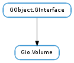

| can_eject() | |
| can_mount() | |
| eject(flags, cancellable, callback, *user_data) | |
| eject_finish(result) | |
| eject_with_operation(flags, mount_operation, cancellable, callback, *user_data) | |
| eject_with_operation_finish(result) | |
| enumerate_identifiers() | |
| get_activation_root() | |
| get_drive() | |
| get_icon() | |
| get_identifier(kind) | |
| get_mount() | |
| get_name() | |
| get_sort_key() | |
| get_symbolic_icon() | |
| get_uuid() | |
| mount(flags, mount_operation, cancellable, callback, *user_data) | |
| mount_finish(result) | |
| should_automount() |
None
| Name | Parameters | Return | Description |
|---|---|---|---|
| changed | Emitted when the volume has been changed. | ||
| removed | This signal is emitted when the Gio.Volume have been removed. If the recipient is holding references to the object they should release them so the object can be finalized. |
Bases: GObject.GInterface
The Gio.Volume interface represents user-visible objects that can be mounted. Note, when porting from GnomeVFS, Gio.Volume is the moral equivalent of #GnomeVFSDrive.
Mounting a Gio.Volume instance is an asynchronous operation. For more information about asynchronous operations, see Gio.AsyncResult and Gio.Task. To mount a Gio.Volume, first call Gio.Volume.mount () with (at least) the Gio.Volume instance, optionally a Gio.MountOperation object and a Gio.AsyncReadyCallback.
Typically, one will only want to pass None for the Gio.MountOperation if automounting all volumes when a desktop session starts since it’s not desirable to put up a lot of dialogs asking for credentials.
The callback will be fired when the operation has resolved (either with success or failure), and a #GAsyncReady structure will be passed to the callback. That callback should then call Gio.Volume.mount_finish () with the Gio.Volume instance and the #GAsyncReady data to see if the operation was completed successfully. If an error is present when Gio.Volume.mount_finish () is called, then it will be filled with any error information.
It is sometimes necessary to directly access the underlying operating system object behind a volume (e.g. for passing a volume to an application via the commandline). For this purpose, GIO allows to obtain an ‘identifier’ for the volume. There can be different kinds of identifiers, such as Hal UDIs, filesystem labels, traditional Unix devices (e.g. /dev/sda2), uuids. GIO uses predefind strings as names for the different kinds of identifiers: Gio.VOLUME_IDENTIFIER_KIND_HAL_UDI, Gio.VOLUME_IDENTIFIER_KIND_LABEL, etc. Use Gio.Volume.get_identifier () to obtain an identifier for a volume.
Note that Gio.VOLUME_IDENTIFIER_KIND_HAL_UDI will only be available when the gvfs hal volume monitor is in use. Other volume monitors will generally be able to provide the Gio.VOLUME_IDENTIFIER_KIND_UNIX_DEVICE identifier, which can be used to obtain a hal device by means of libhal_manager_find_device_string_match().
| Returns: | True if the volume can be ejected. False otherwise. |
|---|---|
| Return type: | bool |
Checks if a volume can be ejected.
| Returns: | True if the volume can be mounted. False otherwise. |
|---|---|
| Return type: | bool |
Checks if a volume can be mounted.
| Parameters: |
|
|---|
Ejects a volume. This is an asynchronous operation, and is finished by calling Gio.Volume.eject_finish () with the volume and Gio.AsyncResult returned in the callback.
| Parameters: | result (Gio.AsyncResult) – a Gio.AsyncResult. |
|---|---|
| Raises: | GLib.GError |
| Returns: | True, False if operation failed. |
| Return type: | bool |
Finishes ejecting a volume. If any errors occurred during the operation, error will be set to contain the errors and False will be returned.
| Parameters: |
|
|---|
Ejects a volume. This is an asynchronous operation, and is finished by calling Gio.Volume.eject_with_operation_finish () with the volume and Gio.AsyncResult data returned in the callback.
| Parameters: | result (Gio.AsyncResult) – a Gio.AsyncResult. |
|---|---|
| Raises: | GLib.GError |
| Returns: | True if the volume was successfully ejected. False otherwise. |
| Return type: | bool |
Finishes ejecting a volume. If any errors occurred during the operation, error will be set to contain the errors and False will be returned.
| Returns: | a None-terminated array of strings containing kinds of identifiers. Use GLib.strfreev () to free. |
|---|---|
| Return type: | [str] |
Gets the kinds of identifiers that volume has. Use Gio.Volume.get_identifier () to obtain the identifiers themselves.
| Returns: | the activation root of volume or None. Use GObject.Object.unref () to free. |
|---|---|
| Return type: | Gio.File |
Gets the activation root for a Gio.Volume if it is known ahead of mount time. Returns None otherwise. If not None and if volume is mounted, then the result of Gio.Mount.get_root () on the Gio.Mount object obtained from Gio.Volume.get_mount () will always either be equal or a prefix of what this function returns. In other words, in code
GMount *mount;
GFile *mount_root
GFile *volume_activation_root;
mount = g_volume_get_mount (volume); /&ast mounted, so never NULL &ast/
mount_root = g_mount_get_root (mount);
volume_activation_root = g_volume_get_activation_root(volume); /&ast assume not NULL &ast/
then the expression
(g_file_has_prefix (volume_activation_root, mount_root) ||
g_file_equal (volume_activation_root, mount_root))
will always be True.
Activation roots are typically used in Gio.VolumeMonitor implementations to find the underlying mount to shadow, see Gio.Mount.is_shadowed () for more details.
| Returns: | a Gio.Drive or None if volume is not associated with a drive. The returned object should be unreffed with GObject.Object.unref () when no longer needed. |
|---|---|
| Return type: | Gio.Drive |
Gets the drive for the volume.
| Returns: | a Gio.Icon. The returned object should be unreffed with GObject.Object.unref () when no longer needed. |
|---|---|
| Return type: | Gio.Icon |
Gets the icon for volume.
| Parameters: | kind (str) – the kind of identifier to return |
|---|---|
| Returns: | a newly allocated string containing the requested identfier, or None if the Gio.Volume doesn’t have this kind of identifier |
| Return type: | str |
Gets the identifier of the given kind for volume. See the introduction for more information about volume identifiers.
| Returns: | a Gio.Mount or None if volume isn’t mounted. The returned object should be unreffed with GObject.Object.unref () when no longer needed. |
|---|---|
| Return type: | Gio.Mount |
Gets the mount for the volume.
| Returns: | the name for the given volume. The returned string should be freed with GLib.free () when no longer needed. |
|---|---|
| Return type: | str |
Gets the name of volume.
| Returns: | Sorting key for volume or None if no such key is available. |
|---|---|
| Return type: | str |
Gets the sort key for volume, if any.
| Returns: | a Gio.Icon. The returned object should be unreffed with GObject.Object.unref () when no longer needed. |
|---|---|
| Return type: | Gio.Icon |
Gets the symbolic icon for volume.
| Returns: | the UUID for volume or None if no UUID can be computed. The returned string should be freed with GLib.free () when no longer needed. |
|---|---|
| Return type: | str |
Gets the UUID for the volume. The reference is typically based on the file system UUID for the volume in question and should be considered an opaque string. Returns None if there is no UUID available.
| Parameters: |
|
|---|
Mounts a volume. This is an asynchronous operation, and is finished by calling Gio.Volume.mount_finish () with the volume and Gio.AsyncResult returned in the callback.
| Parameters: | result (Gio.AsyncResult) – a Gio.AsyncResult |
|---|---|
| Raises: | GLib.GError |
| Returns: | True, False if operation failed. |
| Return type: | bool |
Finishes mounting a volume. If any errors occurred during the operation, error will be set to contain the errors and False will be returned.
If the mount operation succeeded, Gio.Volume.get_mount () on volume is guaranteed to return the mount right after calling this function; there’s no need to listen for the ‘mount-added’ signal on Gio.VolumeMonitor.